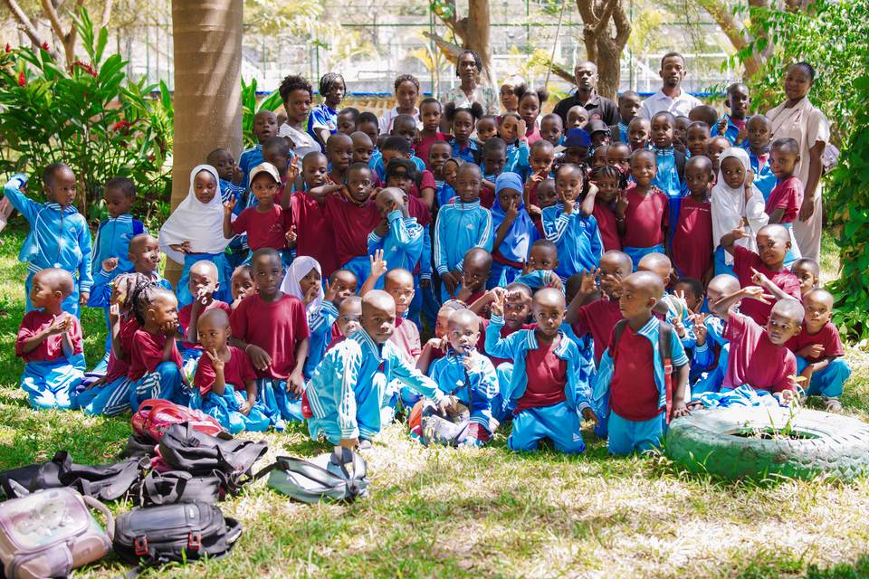
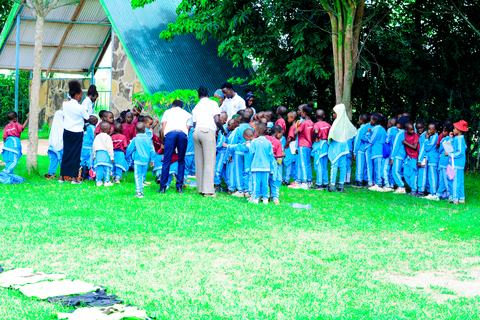
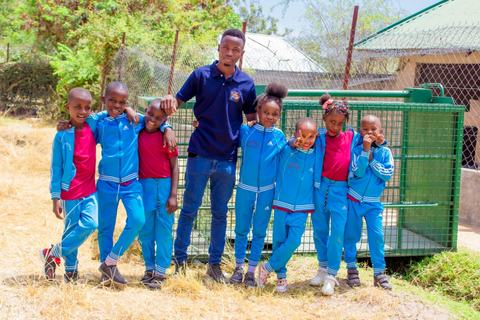
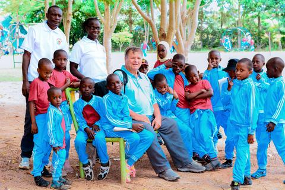

Teacher profile 1
Daycare teacher
Supports young children through guided play, language, care routines and early social development.
Name & qualification pendingThe people behind the school day
Teaching well begins with attention. Our teachers and support staff work together to keep children safe, learning and encouraged.

School leadership
Head Teacher
The Head Teacher leads teaching, pupil welfare, family communication and the daily work of the school. Her focus is a calm, inclusive environment where children are known personally and supported to build reliable learning habits.
Qualifications and years of experience: to be confirmed by the school.
Classroom team
Daycare teacher
Supports young children through guided play, language, care routines and early social development.
Name & qualification pending
Pre-primary teacher
Builds early reading, number confidence, pencil control and readiness for Standard I.
Name & qualification pending
Lower primary teacher
Teaches core subjects with clear explanation, practice and regular checks for understanding.
Name & qualification pending
Primary teacher
Helps pupils connect subject knowledge with careful work, curiosity and responsibility.
Name & qualification pending
Languages teacher
Develops speaking, reading and writing through regular practice and useful feedback.
Name & qualification pending
Numeracy teacher
Builds number fluency and problem-solving from concrete examples to independent work.
Name & qualification pendingBeyond the classroom
Supports communication, records, admissions and the daily organisation of the school.
Helps younger children with supervision, meals, hygiene and transitions through the day.
Supports safe meal routines and a clean environment for children and staff.
Helps maintain the school environment and supports safe arrival and departure.
The school will publish verified teacher qualifications and experience once individual staff records and permissions are complete. Jupe Hills does not publish unconfirmed claims.